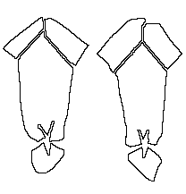

Hose
Bremen

Pattern drawing based on Lundwall in N�rlund
This pair of hose from the 1200s is ecclesiastical in nature, and was found in grave 19
of the Bremen site.
- Top/Heel Length: 90 cm (35.4")
- Width at the Top: 55 cm (21.6")
- Width at the Bottom: 25 cm (9.8")
- Foot Length: 27 cm (10.6")
- Foot Width: 23 cm (9.05")
- Weaving Technique: 2/2
- Thread Count: 20x10 threads/cm (50.8x25.4 threads per inch)
Go to Hose Page; Bremen Site Page
Some Sources:
- Nockert, Margareta. Bockstenmannen, Och Hans Dr�kt. Halmstad och Varberg: Stiftelsen
Hallands l�nsmuseer, 1985.
Some Clothing of the Middle Ages -- Hose -- Bremen, by I. Marc Carlson, Copyright
1997 This code is given for the free exchange of information, provided the Author's Name
is included in all future revisions, and no money change hands-